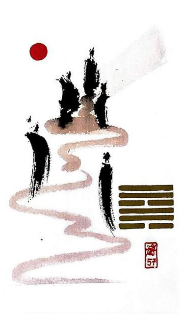

중풍손
평괘 27★ 운명카드 5
풍 / 풍 -> 바람 빠짐 <-> 중천건(애너지뿜뿜)과 반대 기운
바람이 불어 마음이 왔다갔다 구불구불 길 모양바람이 찾아와 마음을 흔들고 간다바람이 운명으로 인도해준다.부드러운 바람이 부는대로 따라가면 탈이 없는 상황을 표현한 그림(이끌어주는대로 순응, 자기자신을 낮추는 구간, 억지부리면 안됌)
상냥함.부드러움.온화함.믿음.접근.이해.우유부단,하늘의 도움.순리.순응.기도하는 마음
연애운
운명적 만남.뗄레야 뗄수없는 인연.마음이 끌림
사업운
순리적.수동적.순응해야 손해가 없다. 운의 바람이 불었을 경우엔 노력이상의 수익 얻음
속마음
썸이유없이 끌리고 흔들리는 마음
1년 이상뗄레야 뗄수없는 인연이라고 생각하는 마음
이별 후이러지도 저러지도 못하는 마음. 헤어지지 못하고 다시 만날거라 생각하는 마음
솔로연애운
새로운 이성 생길 확률 크다
건강운
정신및 신경 질환 주의